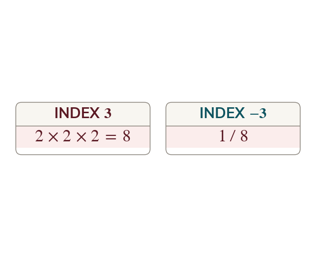

A negative index flips the power
The pattern of powers carries on below an index of into fractions. So is and the value stays positive.
The pattern of powers of a base falls by a factor of that base at every step down, and continuing the pattern past an index of does not stop at or turn negative: it carries on into fractions. So means the reciprocal of the positive power, and the answer is always positive when the base is. The minus sign is instruction about where the power goes, not about the sign of the value. Nothing here is special to base ; the pattern is the same for every base, which is what this lesson adds to the standard-form work already met.